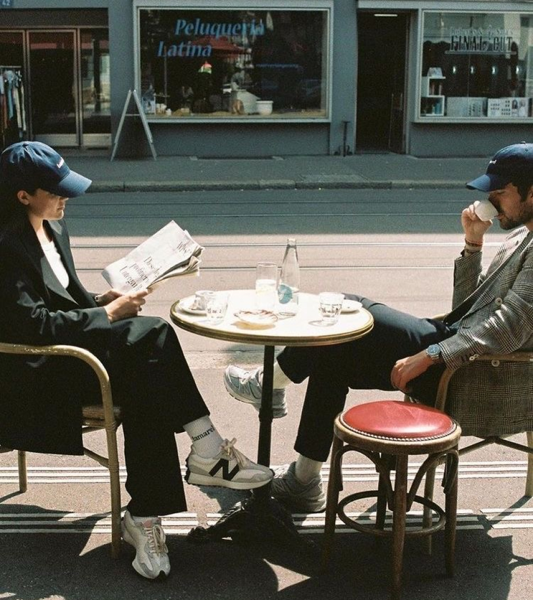
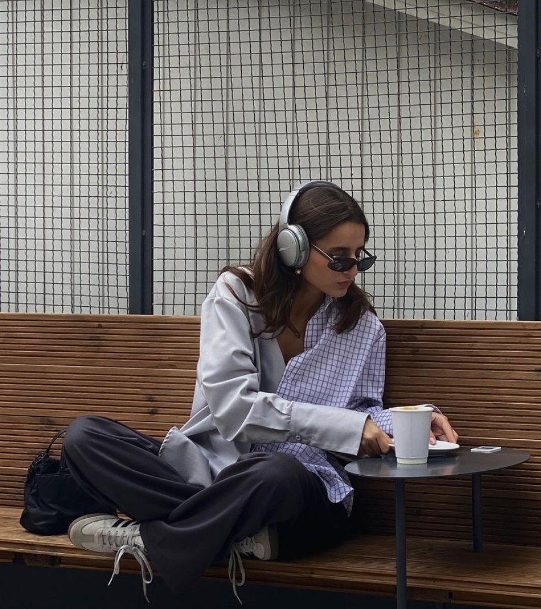
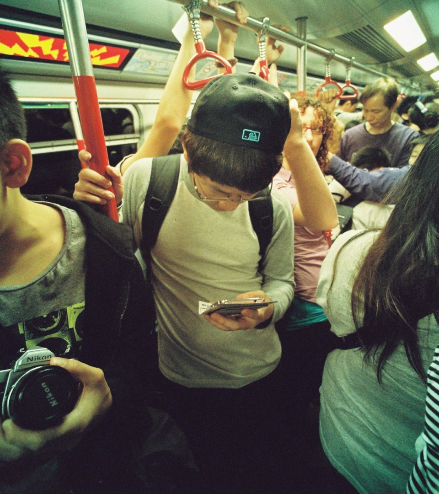
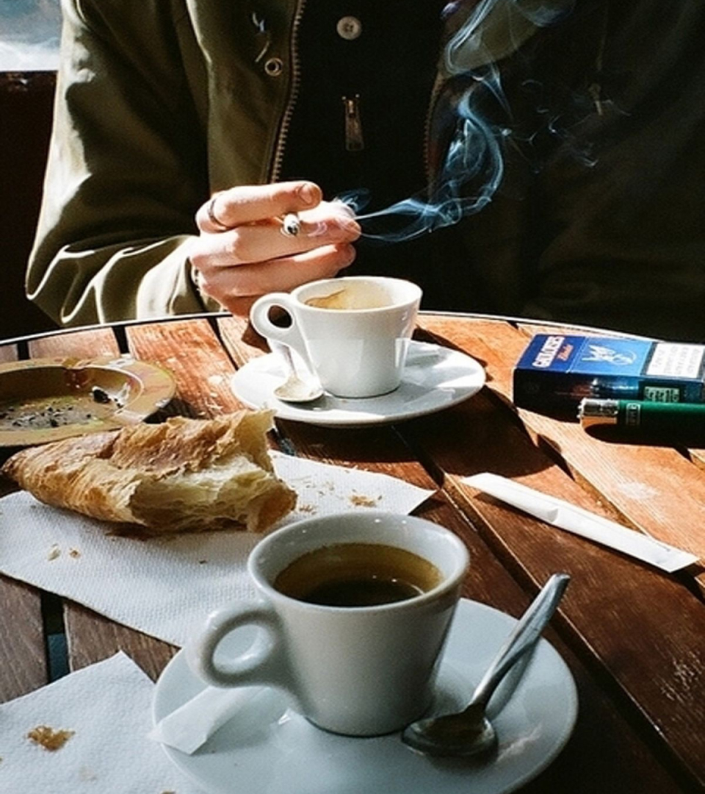
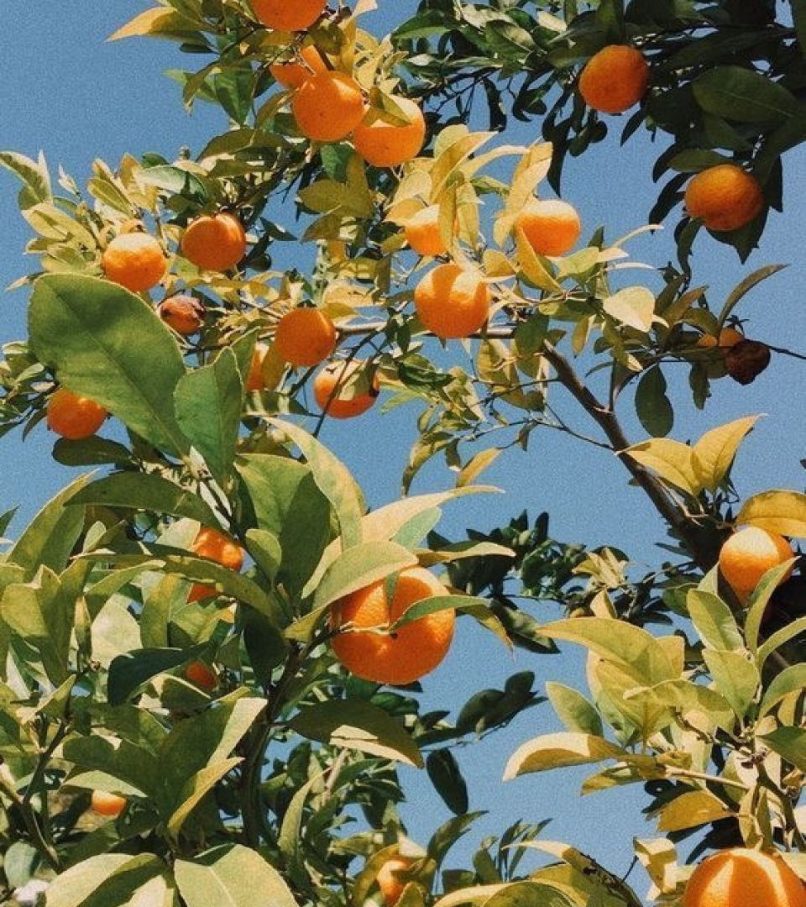

Apertura 16-28 Abr. 2024
FOTOHUB te invita a contemplar Barcelona con ojos renovados, desvelando capas de belleza y lucha que a menudo pasan desapercibidas en la vorágine del día a día.
En el corazón de Barcelona, la lente de les fotógrafes emergentes se convierte en un testigo silencioso de la belleza de la ciudad. Entre calles adoquinadas y rincones olvidados, les artistes encuentran una vía de escape a la precariedad que permea la vida urbana a la que se ven sometides.




